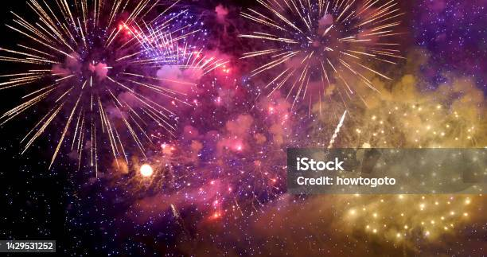
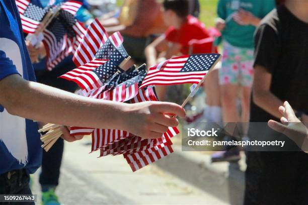

Why we celebrate the Fourth
We celebrate the Fourth of July to mark the day when the United
States declared its independence from Britain in 1776. This day is
important because it symbolizes our country’s desire for freedom and
self-rule. The Declaration of Independence showed that people wanted
to live in a nation where they could have equal rights and liberty.
On this day, we remember the brave individuals who fought for our
freedom and think about what it means to be free. It is a time to
celebrate our history and the values of freedom that continue to
shape our country.
Firework Shows
The Fourth of July fireworks are a highlight of summer, lighting up
the sky with colorful shows. As it gets dark, red, blue, and gold
explosions create a show that people love. Families and friends
gather outside to watch the fireworks while enjoying the warm
weather. These displays add to the fun of Independence Day and make
the evening special. It is a great summertime event that makes the
Fourth of July memorable.

Parades
Fourth of July parades are always full of energy and excitement.
People line the streets to watch colorful floats, marching bands,
and community groups go by. The liveliness of the parade makes
everyone feel joyful and proud. You will see lots of US flags waving
in the breeze, adding to the festive spirit of the day. It is a
great way to celebrate American independence with friends and
family.
